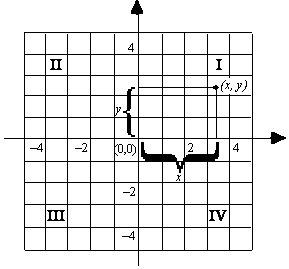
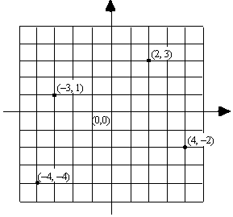

On a number line, the numbers increase in size to the right and decrease to the left:
If we draw a line through the point 0 perpendicular to the number line, we will form a grid:

The thick horizontal line in the above diagram is called the x-axis, and the thick vertical line is called the y-axis. The point at which the axes meet, (0, 0), is called the origin. On the x-axis, positive numbers are to the right of the origin and increase in size to the right; further, negative numbers are to the left of the origin and decrease in size to the left. On the y-axis, positive numbers are above the origin and ascend in size; further, negative numbers are below the origin and descend in size. As shown in the diagram, the point represented by the ordered pair (x, y) is reached by moving x units along the x-axis from the origin and then moving y units vertically. In the ordered pair (x, y), x is called the abscissa and y is called the ordinate; collectively they are called coordinates. The x and y axes divide the plane into four quadrants, numbered I, II, III, and IV counterclockwise. Note, if x ≠ y, then (x, y) and (y, x) represent different points on the coordinate system. The points (2, 3), (–3, 1), (–4, –4), and (4, –2) are plotted in the following coordinate system:

Example:
In the figure below, polygon ABCO is a square. If the coordinates of B
are (h,4), what is the value of h ?